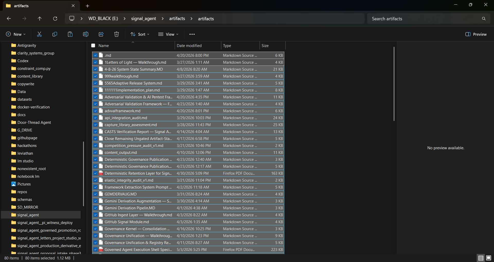

Public State Projection
Technical work has a public surface and an internal history. A release, post, demo, diagram, or announcement shows one visible state of the work. It does not show the total state that produced it.
Behind a visible release can sit notes, failed experiments, intermediate structures, audits, implementation fragments, design tradeoffs, schema revisions, validation work, proof materials, and unresolved questions.
Public projection is not false. It is incomplete.
A polished announcement can appear larger than the work beneath it. Quiet work can appear nonexistent simply because it has not yet been translated into a form other people can inspect. This research series examines that missing translation layer.
Evidence Layer
The opening evidence set documents three distinct layers behind visible work: an artifact archive, a formal schema layer, and a proof-boundary layer.

Walkthroughs, audits, implementation plans, validation reports, release-system records, and generated artifacts.
Machine-readable structures for invariants, states, transitions, rollback paths, human triggers, and promotion decisions.
Claim boundaries, commitments, proof mapping, and verification-oriented documentation.
Why This Series Exists
The purpose is not bigger announcements. It is better reconstruction.
Clarity Systems Group is publishing this series to examine how accumulated internal work becomes externally understandable without separating public claims from the evidence that supports them.
Coming Entries
- Internal State Accumulation
- External State Narration
- Why System Primitives Matter
- Governance Architecture
- Implementation Evidence